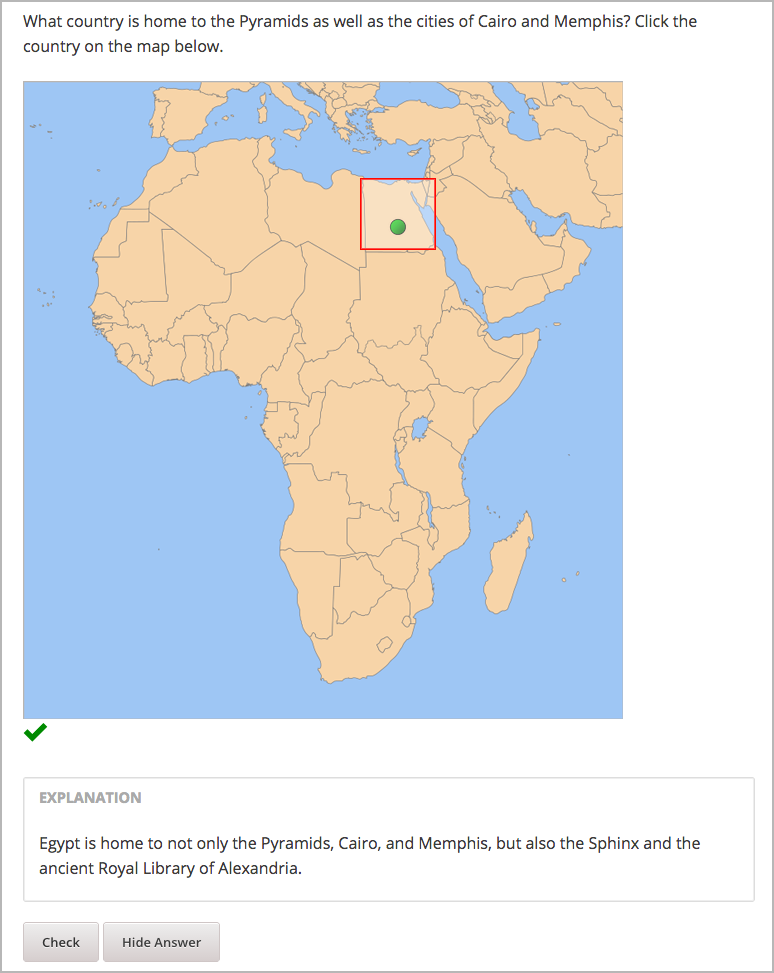
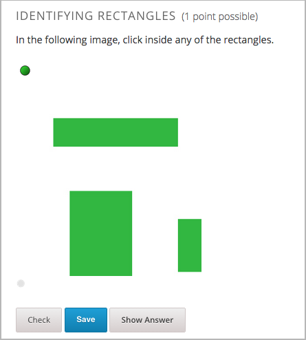
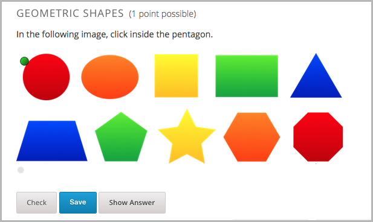

在一个图像映射输入问题中，又称图片点击问题，学生在一个图像预定义的区域里点击。你通过在问题本体里面包含坐标来定义这个区域。
你可以指定下列区域类型。
Note
当你创建一个包含图像的问题时，你必须为你的图像包含alt文本以使图像可访问。关于 alt 文本的更多信息请参照 创建可访问内容的指南
创建一个图像映射输入问题，遵循下列步骤
创建一个图像映射输入问题，你需要下列元素
- 图像的高度和宽度，单位pixel
- 定义区域的坐标对或你想让学生点击的区域
收集你需要的关于图像的信息，用一个图像编辑工具，比如Microsoft Paint
Note
所有图像的坐标对在左上角以(0,0)开始，然后往右下方增加，与阅读中文的前进方向类似
指定一个矩形区域，你需要两个坐标对：左上角和右下角
指定多个矩形，你需要每个矩形的左上角和右下角的坐标对
指定一个不规则的区域，你需要三个或更多的坐标对，Studio基于这些坐标对创建可能的最简单的形状
例如，对于一个三角形，你需要三个坐标对，对于一个八边形，你需要八个坐标对。
<imageinput> 元素中，遵循下列步骤源 属性中用你的图像的路径替换示例文件路径宽度 和 高度 属性值矩形 的属性来反映你想指定的区域的形状和尺寸。更多信息请参照
指定一个矩形区域， 指定多个矩形区域，或 指定一个不规则区域指定一个矩形区域，编辑 矩形 属性，在
<imageinput> 元素中
例如，接下来的 矩形 属性以两个坐标对创建一个矩形：
rectangle="(338,98)-(412,168)"
问题的代码:
<problem>
<p>What country is home to the Pyramids as well as the cities of
Cairo and Memphis? Click the country on the map below.</p>
<imageresponse>
<imageinput src="/static/Africa.png" width="600" height="638"
rectangle="(338,98)-(412,168)" alt="Map of Africa" />
</imageresponse>
<solution>
<div class="detailed-solution">
<p>Explanation</p>
<p>Egypt is home to not only the Pyramids, Cairo, and Memphis, but also the
Sphinx and the ancient Royal Library of Alexandria.</p>
</div>
</solution>
</problem>
你可以在一个图像中指定多个矩形区域
指定多个矩形区域，编辑 矩形 属性，在``<imageinput>`` 属性中
例如，接下来的 矩形 属性创建三个矩形：
rectangle="(62,94)-(262,137);(306,41)-(389,173);(89,211)-(187,410)"
问题的代码:
<problem>
<p>In the following image, click inside any of the rectangles.</p>
<imageresponse>
<imageinput src="/static/imageresponse_multipleregions.png" width="450"
height="450" rectangle="(62,94)-(262,137);(306,41)-(389,173);(89,211)-
(187,410)" alt="Three rectangles on a white background" />
</imageresponse>
</problem>
你可以指定一个非矩形区域
指定一个非规则区域，编辑 矩形 属性，在 <imageinput> 元素中
矩形 成 区域例如，接下来的 区域 属性创建一个五边形
regions="[[219,86], [305,192], [305,381], [139,381], [139,192]]"
问题代码:
<problem>
<p>In the following image, click inside the pentagon.</p>
<imageresponse>
<imageinput src="/static/imageresponse_irregularregions.jpg" width="600"
height="204" regions="[[219,86], [305,192], [305,381], [139,381],
[139,192]]" alt ="A series of 10 shapes including a circle, triangle,
trapezoid, pentagon, star, and octagon" />
</imageresponse>
</problem>
<problem>
<p>Problem text</p>
<imageresponse>
<imageinput src="IMAGE FILE PATH" width="NUMBER" height="NUMBER"
rectangle="(X-AXIS,Y-AXIS)-(X-AXIS,Y-AXIS)" alt="DESCRIPTION OF
IMAGE" />
</imageresponse>
</problem>
<imageresponse>: 表明问题是一个图像映射输入问题<imageinput>: 指定图像文件和文件里学生必须点击的的区域标签： <imageresponse>
表明问题是一个图像映射输入问题
属性
（空）
子标签
<imageinput>
标签： <imageinput>
指定图像文件和文件里学生必须点击的的区域
属性
属性 描述 源（必需）图像的URL 高度（必需）图像的高度，单位pixel 宽度（必需）图像的宽度，单位pixel 矩形（必需），（或者，对不规则区域区域区域）有两个或更多坐标对的属性，定义了学生应该点击的区域 alt（必需）图像的描述，用于可访问性。 子标签
（空）
{kind=link}
{kind=link}
{kind=link}